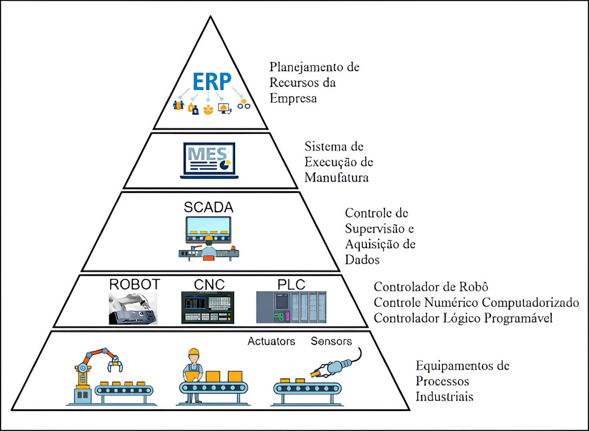

Pirâmide da Automação Industrial
A pirâmide da automação representa os níveis de organização de um sistema industrial, desde os equipamentos que atuam diretamente no processo até os sistemas de gestão da empresa.

Os cinco níveis da automação
Cada nível possui funções específicas e troca informações com os demais. Na base estão os dispositivos que atuam diretamente no processo, enquanto no topo ficam os sistemas responsáveis pela gestão empresarial.
Dispositivos de campo
Sensores e atuadores que medem variáveis e executam ações diretamente no processo industrial.
Controle
CLPs e controladores que executam a lógica de controle e comandam os equipamentos.
Supervisão
Sistemas SCADA que monitoram variáveis, alarmes e estados do processo.
Gestão da produção
Sistemas que organizam ordens, recursos e informações da fábrica.
Gestão empresarial
Sistemas corporativos voltados ao planejamento, aos custos e aos recursos da empresa.